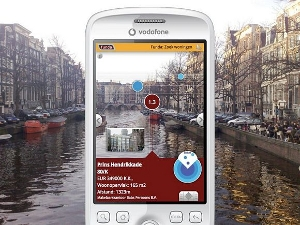

Sobre Realidade Aumentada(){
Entrevista
printf: Quando foi o seu primeiro contato com a Realidade Aumentada? Como essa área se tornou o seu campo de pesquisa?
Bruce: Meu primeiro contato foi trabalhando com um laboratório de defesa na cidade de Adelaide. Eles nos emprestaram um dos primeiros computadores-mochila com uma tela projetora de imagens virtuais que mostra a interação entre os mundos (real e virtual). Nós começamos a fazer aplicações de navegação em 1998.
printf: Por favor, explique o que a Realidade Aumentada é e qual é a sua diferença entre Realidade Aumentada e Realidade Virtual.
Bruce: Realidade Aumentada é a habilidade de ver o mundo físico e o mundo virtual ao mesmo tempo. O mundo virtual é projetado para o mundo físico. Isto permite que a informação virtual seja vista em um contexto com o ambiente físico. Na Realidade Virtual, o usuário é desligado do mundo físico.
printf: Recentemente, quais são as principais aplicações para Realidade Aumentada?

Sistema de Realidade Aumentada
Bruce: As principais aplicações são Marketing e Informação Baseada em Localização.
A abordagem do marketing coloca um pequeno marcador preto e branco sobre um produto ou em uma revista para ter alguma forma de aplicativo pop-up.
A Informação Baseada em Localização provê fontes pontuais de dados, como a localização de estações de metrô. Isto é uma perspectiva de um guia de navegação GPS em primeira pessoa.
}